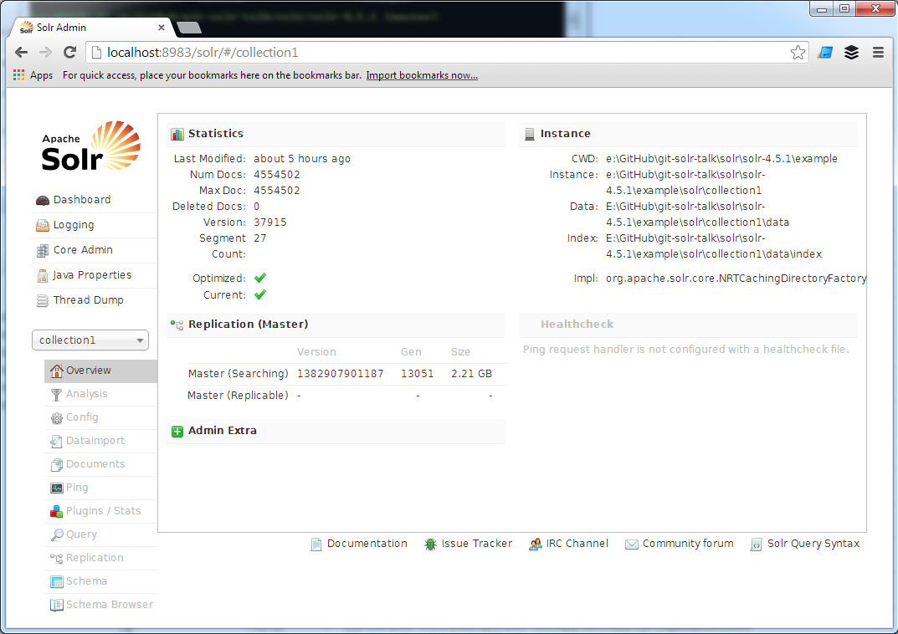
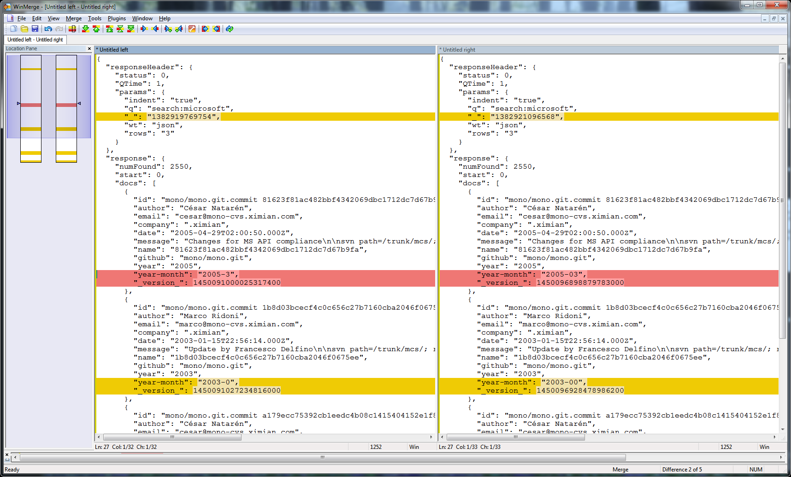

Mining Source Code Repositories with Solr
Exploring Full-Text Search
www.garysieling.com/jug
Gary Sieling / @garysieling
In this talk I’m going to discuss full-text indexing in Solr, which is an open-source Java tool that wraps Lucene. I’ll show you how to build up an example project which indexes the contents of git source code repositories.
Some of you may be familiar with products like Atlassian’s Fisheye, or code search engines like Krugle, or used the Github search. The nice thing about these is they let you do more than the out-of-the box 'blame' tool in your version control software, like finding out who ported a feature between branches, or searching both git and cvs repositories.
Since there are mature products for this type of thing, this talk isn’t intended to be a replacement for them; rather it’s a well contained way to understand full-text search, and to explore the design challenges in building ETL processes.
Motivation
Which engineer worked on a particular client/project/technology?
Since Wingspan does some consulting projects, it’s often valuable for engineers to look at a change and know if it was done for a particular client - for instance, if an API feature does not appear to be used, it may actually be in use by a client. That said, the person who may have done the change may not be the most knowledgeable about it, and you'd prefer to know who the lead for a project was.
Similarly, when someone calls the company, it’s also helpful to know who to route phone calls to - especially since the person who picked up the phone could be a marketing or administrative person receiving the call and not someone with knowledge of the project.
This is faceted search.
Mark Robert Miller (909) - Apache foundation
Yonik Seeley (718) - Creator of Solr
Robert Muir (530) - Lucene Committer
Chris M Hostetter (365) - Solr/Lucene/Lucidworks
Steven Rowe (273) - Apache Lucene/Solr PMC member & committer
search:sql
facet.field=author
"Ilia Alshanetsky" - Postgres committer
"Wez Furlong"- oracle OCI driver for PHP
"Daniel Morgan" - oracle dba consultant
"Ulf Wendel" - principal on mysql
"Felipe Pena" - MS Sql driver for php?
Motivation
Who is an expert in technology X?
In some large companies, it’s also helpful to know how many engineers have worked with a particular technology, and what the trends are. For instance, Microsoft’s MSDN program awards points based on certifications of developers in the organization, so it’s useful to know if you have a lot of certified C# developers, or people who could go get a certification if needed.
You can answer these types of questions by counting the number of commits a person has that reference a client or tool, which is essentially faceted search. If you imagine the UI for Amazon, on the left hand side it shows you categories and category counts for fields that apply to items in your search results, such as the genre or studio for a movie. What we are going to do here is to build a facet for an author or other commit attributes.
This is different from a typical search, where you're looking for the commits individually, which serves different use cases than I'm after here. This technique works especially well if you company is diligent about what you put in commits; clearly counting numbers of commits will not be helpful if your average commit is hundreds of files and infrequent.
Solr - Schema
<field name="id" type="string" indexed="true" stored="false" required="true" />
<field name="author" type="git_author" indexed="true" stored="true" required="true" />
<field name="company" type="string" indexed="true" stored="true" required="true" />
<field name="year" type="string" indexed="true" stored="true" required="true" />
<field name="email" type="string" indexed="true" stored="false" required="true" />
<field name="message" type="string" indexed="true" stored="false" required="true" />
<field name="search" type="text_general" indexed="true" stored="false" required="false" />
When you define the schema, you tell Solr what index information you want to store with columns - for instance, if you want to retrive data, or just use it in search.
There are various other things you can turn off
Stats for Live Demo
2.1 GB Git History => 132 MB Solr Repository
Index of 232,839 commits
Drupal, Git, Lucene, Lucene.NET, Solr, Mono, Node.JS, PHP, Postgres, Vagrant
Wingspan Source Code
2,000 MB Git Archive => 90 MB Solr Index
Works well for finding project leads
Works well for finding technology experts
Built over a few hours/days during a conference
Github Archive
202 GB Git Archive => 1 GB Solr Index
18,000 repositories
4,554,502
2-3 hour conversion process
Developer workstation (i7 / 16 GB RAM)
Shows what you can do with a decent developer workstation
3-4 hours tuning the process to load this
What is Full Text Search?
The dogs ran home => dog run home
The dog runs home => dog run home
Solr and Lucene are part of a class of products which are used for full-text search. The idea of full-text search is to use natural language processing techniques to massage text data into a form that lends itself to search. For instance, finding words which are similar and treating them as equivalents.
Full Text Search vs. Google
Google uses citations to influence rankings
Lucene calculates a similary score between each query and document
Math makes it so common words don't have much effect
What is Solr?

Solr was built as an administration webapp around Lucene
Lucene is just a bunch of Jars for doing full-text search.
Solr adds replication, faceted search, caching, and highlighting.
How this is built
Front-end
Back-end
JSON API
/select/?q=search:(search:jug)
&version=2.2
&start=0&rows=0
&indent=on
&facet=on
&facet.field=author
&facet.method=fc
&facet.limit=30
&wt=json
Shown here are an example URL to Solr's REST API with faceting turne on, and an example of what the join syntax looks like. Solr comes with several query parsers. This implements some interesting functionality - rather than having a single query language which is detailed like SQL, there are applications which nest multiple query parsers.
The join case allows you to join the table to itself - if you wanted to use this to join in an ACL, for instance, you could add new columns for the ACL options, and an identifier which tells you which type of object a row is, essentially using a partitioning concept to build sub-tables.
facet.method has three options, which control the execution path. One starts with an enumarable field, and counts the intersection of fields. The default loops through documents which match the query summing as it goes. This can also be split across sub-indexes and then re-added.
Return types - csv, xml, json, php, python, ruby, javabin
Building a facet UI
var url = 'http://solr/core1/select/?q=search:(search:jug)';
$.ajax({
type: "GET",
url: url,
success: function(response){
// display search results
});
You can set up a simple UI with a tool like Twitter bootstrap, and retrieve search results using the Solr APIs. The APIs have to be configured so that certain endpoints are available. Here’s some example code, this is just typical jQuery code.
Backend ETL
E xtracting Git CommitsT ransforming CommitsL oading data to Solr
JGit
SolrJ
CVS2GIT
Many others are possible
Why do you need Java code?
Extract data (e.g. PDF contents)
Data transformations (email -> company)
Denormalized data
Row = document
Document comes from PDF / Office / etc
Must eval document yourself
Fiddle with data as needed
Solr Repositories resemble a single, denormalized database table, which they call a core. Each row in the table is referred to as a “document”, which comes from the idea that you may have indexed the contents of a PDF, HTML file, or Word document, although there is no particular requirement on what a document must be.
Even though Solr refers to rows a documents, Solr index just stores text, so if you started with a bunch of PDFs you’d have to build your own processing pipeline to extract and process text from them.
Some customizations can be done with configurations in Solr - if these work, they tend to be pretty easy to figure out, and when you can't figure them out quickly, you usually need to resort to code.
Extracting Data from Git
FileRepositoryBuilder builder = new FileRepositoryBuilder();
Repository repository =
builder.setGitDir(new File(path))
.build();
RevWalk walk = new RevWalk(repository);
for (Ref ref : repository.getAllRefs().values()) {
if ("HEAD".equals(ref.getName())) {
walk.markStart(walk.parseCommit(ref.getObjectId()));
break;
}
}
for (RevCommit commit : walk) {
...
}
I settled on JGit to read git repositories, after testing a couple Java-based libraries. JGit is a re-implementation of git in Java, and differs from other libraries in that it doesnt wrap the command line interface. Wrapping the command line is fraught with peril, and was very flaky when I tested it, and OS specific.
Extracting Data - Patches
// To fetch file diffs, we must provide a stream, where they will be written:
ByteArrayOutputStream out = new ByteArrayOutputStream();
DiffFormatter df = new DiffFormatter(out);
df.setRepository(repository);
List<DiffEntry> diffs = df.scan(parent.getTree(), commit.getTree());
// Each of these objects is one file in the commit
for (Object obj : diffs) {
DiffEntry diff = (DiffEntry) obj;
FileHeader fh = df.toFileHeader(diff);
df.format(diff);
String diffText = out.toString("UTF-8");
// Reset the stream, so we can get each patch separately
out.reset();
...
}
JGit lets you generate patch sets, or patch sets with several lines of context. The API is a bit weird - pass it an output stream, and it will write a diff to the stream. The neat thing about this is it lets you control a bunch of options - checking for renames, number of lines of context.
Example transformations include entity name normalization or extracting data from external systems like LDAP - for instance, you might validate that things you think are ticket numbers are valid.
Extracting Commit Metadata
// For this application, only find new or modified files
if (diff.getChangeType() == DiffEntry.ChangeType.MODIFY ||
diff.getChangeType() == DiffEntry.ChangeType.ADD)) {
// We have enough information now to get commit messages,
// file names, and author information
System.out.println(diff.getNewPath());
System.out.println(commit.getFullMessage());
System.out.println(commit.getAuthorIdent().getName());
System.out.println(commit.getAuthorIdent().getEmailAddress());
}
For this application, I look only for new or modified files.
This API gives us enough information to get filenames, author information, and the commit message.
DiffEntry is each change within the commit.
Transformations - Search Data
Pattern capitals = Pattern.compile(".*([a-z])([A-Z]).*");
Matcher m = capitals.matcher(file);
// myAbstractFactory => my Abstract Factory
String fileNameTokens =
m.replaceAll("\1 \2");
// /project/src/large_grid.js => project src large grid js
fileNameTokens = fileNameTokens
.replace("/", " ")
.replace("-", " ")
.replace(".", " ")
.replace("_", " ");
String search =
commit.getFullMessage() +
" " + file;
This is putting metadata into the search (project name, file name, java class)
The spaces are significant because Solr is going to use these as token delimeters.
In what I built, I've included filenames and paths in the data that you can search in solr, because sometimes these indicate client names or features that someone might have worked on.
Remove large commits
Transformations - Companies
// x.y@google.com => google.com
String company = emailAddress.split("@")[1];
if (company.contains("."))
{
// abc.com => google
company = company.substring(0, company.lastIndexOf("."));
}
return company;
Here we see the code we use to extract the company name from email addresses.
Transformations - Commit Footers
Signed-off-by
Acked-by
Reported-by
Tested-by
CC, Cc
Bug
RevCommit.getFooterLines
public final List
There is a function called getFooterLines() which will parse entries from the end of the commit.
This method splits all of the footer lines out of the last paragraph of the commit message, providing each line as a key-value pair, ordered by the order of the line's appearance in the commit message itself.
Keys are alphanumeric, and can have dashes, the values can have anything but a new line
Since there is built-in support in the tools, I thought it worth mentioning this, since this information can be useful if it's added consistently.
Loading Data in Solr
// Connections happen over HTTP:
HttpSolrServer server = new HttpSolrServer(
"http://localhost:8080/solr");
Collection<SolrInputDocument> docs = new ArrayList<SolrInputDocument>();
SolrInputDocument doc = new SolrInputDocument();
// ID for the document contains enough information to find it in the source data:
doc.addField("id", remoteUrl + "." + commit.getId());
doc.addField("author", commit.getAuthorIdent().getName());
doc.addField("email", commit.getAuthorIdent().getEmailAddress());
doc.addField("message", commit.getFullMessage());
// Any data we let the user search against is included in this value:
doc.addField("search", search);
Need to remove nulls
Specify boost
Note multiple columns - can facet on one, and search on the other
Loading Data - Threading
File[] files = new File("repositories\\").listFiles();
String lastRepository = getLastRepository(); // resume after failure
int i = 0;
int numThreads = Runtime.getRuntime().availableProcessors();
for (File f : files) {
if (i++ % numThreads == _myIndex) { // load every nth repository
String filename = f.getAbsolutePath() + "\\.git";
convertRepo(server, filename);
}
i++;
}
Currently I have the application set up to run with several threads
Most of the time is spent loading git data
For this process, order of operations doesn't matter. But for some people it does.
Setting up Solr
Download Solr
Modify schema.xml
Start Jetty:
Solr - Limitations
Don't expose Solr publically
Don't rely on joins
Roll your own ACLs, if needed
Solr aims to be as fast at returning results as possible. It avoids features which slow this down; for instance, if you want to enforce ACLs on items in search results, you need to add columns and figure out how to populate them on your own. It has very limited support for inner joins, which allows for a way to implement more complex ACL structures if you do need them.
Solr also assumes that you secure the machine it lives on - it’s not intended to directly face the internet, although for simple examples I’ve done that, but there is a risk that someone could modify your repository.
Inspiration
High Volume Indexing
Parsing Code Comments
Testing
Concepts for similar tools
Indexing Many Repositories
If you do something like this, you will discover that a folder with, say, a half million files, is a troublesome structure. Windows can open this, but it's very slow to even list the files. On a different project, I got up to a half million files in a folder, and was forced to come up with a different structure.
Indexing Many Repositories
You can do a SHA or MD5 hash and take 2-4 characters
One or two level deep folder hierarchy of this
Makes it easier to split up data for a test, if you have a lot
Constraints on ETL processes
Real-time updates are hard
Plan for power failures
Plan for reloading data
An ETL process that does a lot of work may take hours, weeks, or months to finish.
A natural consequence of this is that you may need to consider inevitable power failures. This is true of webapps too, but typically that means you lose a user's session, which is different from interrupting something like a long SQL statement.
Even if you don't have something that takes weeks, the time to generate final data is an issue, as it limits the developer's ability to cycle through fixes.
Testing ETL processes

Use real data - finds edge cases
Consequently, you want to be able to load sample data, which ideally is a subset of a production system. Data you make up on your own is ok, if you are just starting out, but really does not reflect the full potential for edge cases found in real data.
Once you have a running system, it's very helpful if you are able to run side-by-side processes to test new and old versions side-by-side- I worked with someone once on a reporting system, he told me that at a bank he'd worked at, they would run new versions of the code side-by-side with the old for a month, to not discrepancies.
Use a key that lets you get back to the original data, rather than a sequence number
Parsing Comments
@@ -1,9 +1,9 @@
/*
* Here is a multi-line comment.
*/
String a = "x"; // here is a comment at the end of a line
-String b /* a comment in a line */ = "y";
+String b /* a long comment in a line */ = "y";
// Commented out code:
// String c = "d";
Haven't tried to parse code yet - couple example challenges
Comments show challenges of attributing which work a person did within a file to what they're really working on
Would have to build parse tree for code and compare before/after
At this point, you may have noticed that I haven't attempted to parse code - however, I have given a lot of thought to why I don't want to parse code, or at least handle it as a special case of unstructured text. What I want to show now is a couple interesting theoretical challenges, which I think provide some compelling cases of why it can be really challenging to get an ETL process or a data migration project to be successful.
Code comments also provide good insight into who worked on what. Obviously these aren't code, but often contain valuable information, and should be relatively easy to detect, at least in most languages which descend from C. In a source file, you could detect these by looking for lines which contain two slashes, or the slash-star form for multi-line comments.
JSX
var MarkdownEditor = React.createClass({
render: function() {
return (
<div className="MarkdownEditor">
<h3>Input</h3>
<div
className="content"
dangerouslySetInnerHTML={{
__html: converter.makeHtml(this.state.value)
}}
/>
</div>
);
}
});
If you felt that example was contrived, here's an illustrative snippet of actual code, which I got from the Documentation for JSX, which is a language that compiles to Javascript
With all the new languages like this, you'd be hard press to build a generalized soluation.
Many large projects also have a DSL
Variations
Lots of free data, especially Government - PACER extracts, U.S. Code, Philly Code
MS Exchange / Sharepoint
D3.js, Tilemill
Lots of datasets available now
Lots of data hidden inside companies
Nice graphing library made by artists for interactive infographics
THE END
The unoptimized Solr index for the Wingspan source code is 90 MB of commits versus 2,000 MB of git history. The trade-offs that make Solr indexes small also make it fast, even without any kind of scaling infrastructure.